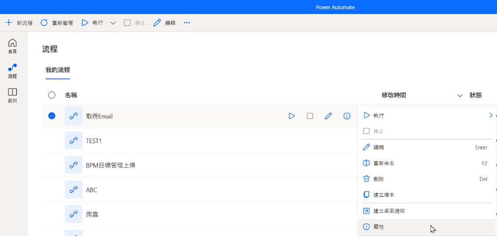
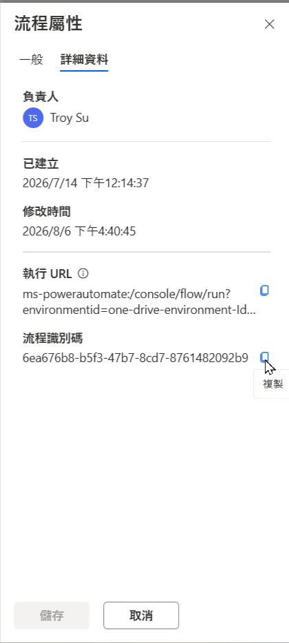

作者：Troy Su | Power Automate Desktop (PAD) 與 RPA 自動化專家
在使用 PAD Orchestrator 或其他外部工具來觸發 Power Automate Desktop 腳本時，最關鍵的步驟就是取得該腳本專屬的「工作流程 ID (Workflow ID)」。這組 ID 是 PAD 系統辨識腳本的唯一憑證。
這串 ID 通常是一長串包含英數字與連字號的 GUID (例如：12345678-abcd-1234-abcd-1234567890ab)。以下將教你兩種最快找出這串 ID 的方法。
方法一：透過建立桌面捷徑尋找 (最推薦)
這是最簡單且不容易複製錯誤的方法：
- 打開你的 Power Automate Desktop 應用程式主畫面（控制台）。
- 在清單中找到你想要排程執行的工作流程。
- 點擊該工作流程右側的 三個點 (更多動作) 圖示。
- 在選單中選擇 建立桌面捷徑 (Create desktop shortcut)。
- 回到你的 Windows 桌面，找到剛剛建立的捷徑，對著它點擊 右鍵 > 內容 (Properties)。
- 在「捷徑」頁籤中，找到 目標 (Target) 欄位。你會看到類似下方這樣的一串指令：
"C:\Program Files (x86)\Power Automate Desktop\PAD.Console.Host.exe" -run -workflowId 12345678-abcd-1234-abcd-1234567890ab
其中，在 -workflowId 後面的那串代碼 12345678-abcd-1234-abcd-1234567890ab 就是你的 PAD ID！將這串 ID 複製起來，貼到 PAD Orchestrator 的設定檔中即可完成綁定。
方法二：透過工作流程屬性尋找
如果你不想在桌面建立捷徑，也可以直接在軟體內查看：
- 同樣在 Power Automate Desktop 主畫面找到你的工作流程。
- 點擊右側的三個點 (更多動作)。
- 選擇 屬性 (Properties) 或 詳細資料 (Details)。

- 在彈出的視窗中，切換到「詳細資料」，找到 流程識別碼 (Flow ID) 欄位，直接點擊旁邊的複製按鈕即可。

注意：新版本的 PAD 介面可能會稍微調整屬性視窗的排版，如果找不到，請直接使用「方法一」最為保險。
部署至 PAD Orchestrator
取得這串 ID 後，將它填入 PAD Orchestrator 的腳本設定欄位中。Orchestrator 就能在指定的時間，或是指定的觸發條件下，精準地呼叫這串 ID，啟動真正的無人值守自動化流程！